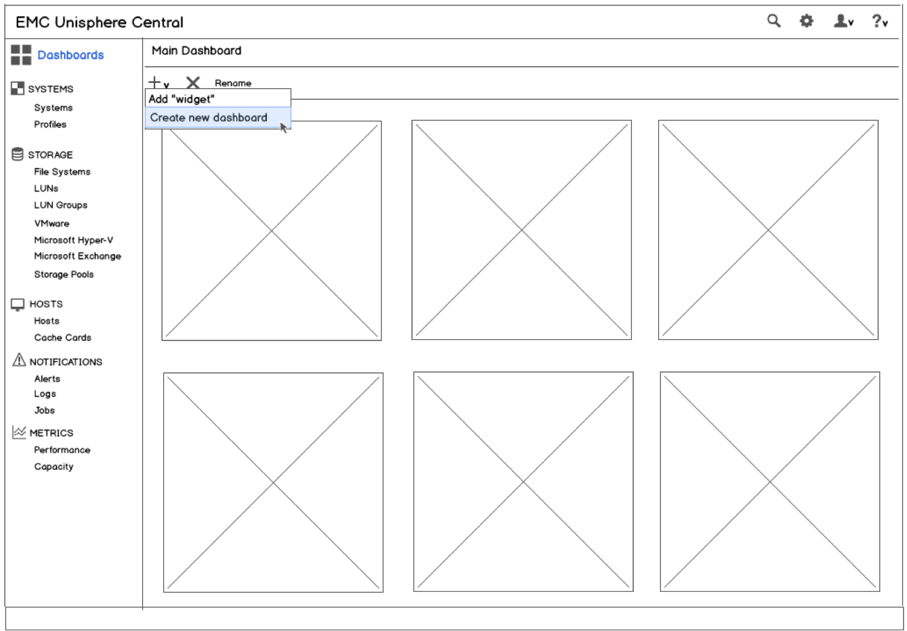

Dashboards
Customized dashboards are an effective way to display the most important information to the end user, allowing them to act intelligently. Our design goals for the Unisphere Dashboard framework were to make it very easy to add, remove, and customize widgets, create multiple dashboard views, and provide drill-down capabilities for more information.
We started off with some Balsamiq wireframes providing different options for the basic functionality: 
{kind=link}
After implementation of two options, we ran some usability tests and revised the design based on the results:

When designing the widgets, we used a few guidelines:
- What are the most important use cases?
- What data does a user need at a glance to address those use cases?
- How to visually present the data?
- Would the user benefit from more than one presentation of the data?
- Would the user benefit from showing a subset of the data?
- Can any non-data ink or non-central data be removed from the widget while presenting the same story?
{kind=link}
Then created mockups to illustrate the options:
A user can click on any of the three icon/text panels to get a more detailed breakdown on what objects meet that level of protection:
{kind=link}
Clicking on any of the individual links switches to a master/summary table of LUNs, File Systems, or Datastores, filtered by the protection type (unprotected, locally, or remotely):
{kind=link}